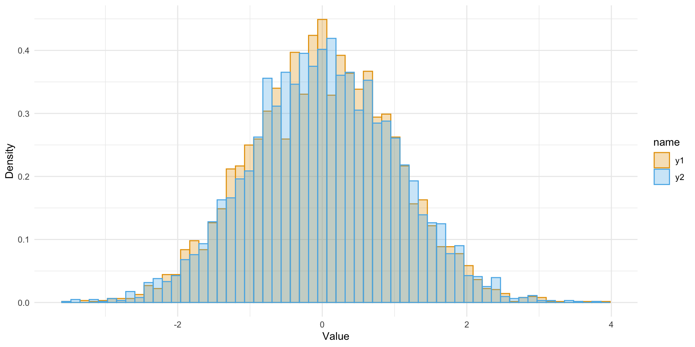
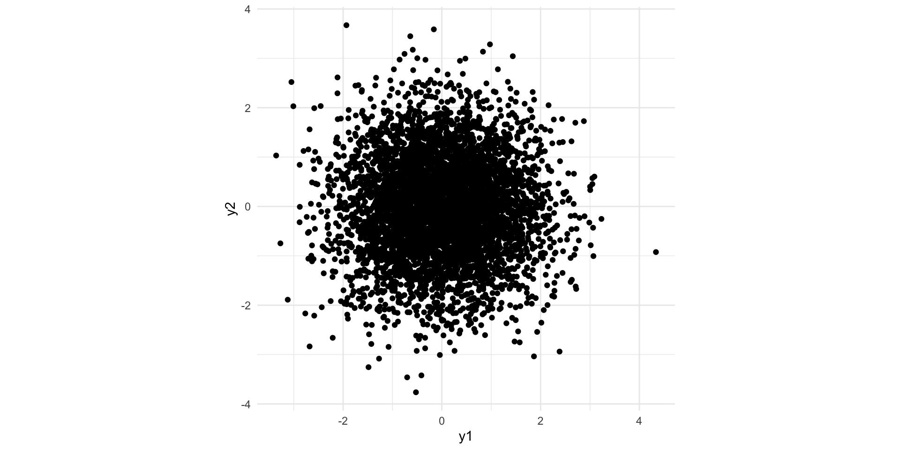
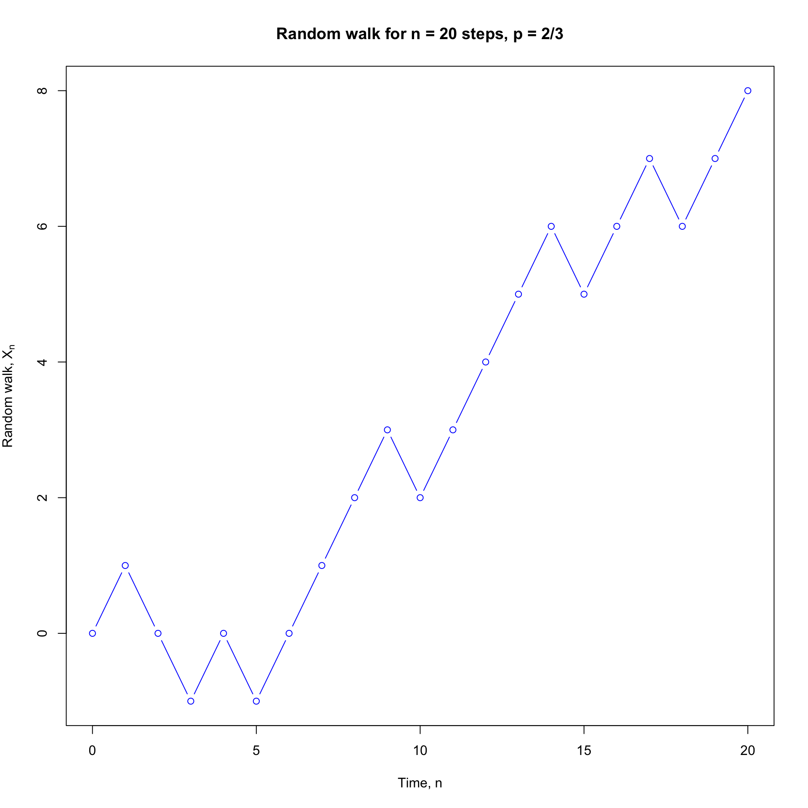

[1] 0.594Monte Carlo Methods
BSMM8740-2-R-2024F [WEEK - 9]
L.L. Odette
Recap of last week
- Last week we introduced the fundamental problems of inference and the biases of some intuitive estimators.
- We also built a basic understanding of the tools used to state and then satisfy causality assumptions.
This week
- We will get explore Monte Carlo methods as a way to integrate difficult functions, and sample from difficult probability distributions.
- Along the way we will look at Markov Chains which both underlie sampling methods and provide a way to model the generation of data.
Monte Carlo (MC) Methods
Monte Carlo methods are a class of simulation-based methods that seek to avoid complicated and/or intractable mathematical computations.
Especially those that arise from probability distributions.
MC Methods
We can use MC methods to estimate probabilities: for a random variable \(Z\) with outcomes in a set \(\Omega\), with some subset \(S\subset\Omega\) and event \(E\equiv Z\in S\), we can compute the probability of \(E\) (i.e. \(\mathbb{P}(E)\)) with of samples of \(Z\), say \(z_1,z_2,\ldots,z_M\) as
\[ \mathbb{P}(E) = \frac{1}{M}\sum_{i=1}^M 1_{z_i\in S} \]
MC Methods
Example
If \(Z\sim\mathscr{N}(1,3)\) and \(S=Z:0\le Z\le 3\) then
\[ \mathbb{P}(E) = \mathbb{P}(0\le Z\le 3) = \int_0^3\frac{1}{\sqrt{2\pi3}}e^{-\frac{(t-1)^2}{2*3}}dt \] In which case it is easier to just use R and calculate:
than it is to compute the integral.
MC Methods
Example continued
Surprisingly, in case we don’t know that pnorm exists, we could do this:
MC computation
# define the event
event_E_happened <- function( x ) {
if( 0 <= x & x <= 3 ) {
return( TRUE ) # The event happened
} else {
return( FALSE ) # The event DIDN'T happen
}
}
# Now MC says that we should generate lots of copies of Z...
NMC <- 10000; # 10000 seems like "a lot".
rnorm( NMC, mean=1, sd=sqrt(3) ) |>
purrr::map_lgl(event_E_happened) |>
sum()/NMC[1] 0.5964MC Methods
Now
\[ \mathbb{P}(E) = \frac{1}{M}\sum_{i=1}^M 1_{z_i\in S} \]
is the MC estimate of \(\mathbb{E}[E]\), which is unbiased because for each \(i\), \(\mathbb{E}[1_{z_i\in S}]=\mathbb{E}[E]\), and the variance is
\[ \mathrm{Var}\left({\mathbb{P}(E)}\right)=\frac{1}{M^2}\mathrm{Var}\left(\sum_{i=1}^M 1_{z_i\in S}\right)=\frac{1}{M^2}\sum_{i=1}^M \mathrm{Var}\left(1_{z_i\in S}\right)=\frac{1}{M} \mathrm{Var}\left(1_{z_i\in S}\right) \]
MC Methods
This is true for any function of the random variable \(Z\), and
\[ \mathbb{E}\left[h(Z)\right]\approx \hat{h}=\frac{1}{M}\sum_{i=1}^M h(z_i) \]
and the variance of \(h(Z)\) decreases as \(1/M\) by the same reasoning.
Random Number Generation
Monte Carlo simulation starts with random number generation, usually split into 2 stages:
- generation of independent uniform \((0, 1)\) random variables, and
- conversion into random variables with a particular distribution (e.g. Normal)
Very important: never write your own generator, always use a well validated generator from a reputable source (e.g. R).
Random Number Generation
Pseudo-random generators found in computers use a deterministic (i.e. repeatable) algorithm to generate a sequence of (apparently) random numbers on the \((0, 1)\) interval.
What defines a good random number generator (RNG) has a long period – how long it takes before the sequence repeats itself \(2^{32}\) is not enough (need at least \(2^{40}\)). various statistical tests to measure “randomness” – well validated software will have gone through these checks.
Random Number Generation
Recall that \(\mathscr{N}(0, 1)\) Normal random variables (mean 0, variance 1) have the probability density function:
\[ p(x)=\frac{1}{2\pi}e^{-\frac{1}{2}x^2}\equiv\phi(x) \] and if \(X\sim\mathscr{N}(0, 1)\) then its CDF is:
\[ \mathbb{P}[X\le x] = \int_{-\infty}^x\phi(x)dx \] ## Random Number Generation
The Box-Muller transformation method takes two independent uniform \((0, 1)\) random numbers \(y_1\), \(y_2\), and defines:
\[ \begin{align*} x_{1} & =\sqrt{-2\log y_{1}}\cos(2\pi y_{2})\\ x_2& =\sqrt{-2\log y_{1}}\sin(2\pi y_{2}) \end{align*} \] It can be proved that \(x_1\) and \(x_2\) are independent \(\mathscr{N}(0, 1)\) random variables
Random Number Generation
Code
samples <- matrix(runif(10000), ncol=2) |> data.frame() |>
dplyr::mutate(
normals =
purrr::map2(
X1, X2
,(\(x1,x2){
data.frame(
y1 = sqrt( -2 * log(x1) ) * cos(2 * pi * x2)
, y2 = sqrt( -2 * log(x1) ) * sin(2 * pi * x2)
)
})
)
) |>
tidyr::unnest(normals)
samples |>
tidyr::pivot_longer(-c(X1,X2)) |>
ggplot(aes(x=value, color=name, fill=name)) +
geom_histogram(aes(y=..density..), bins = 60, position="identity", alpha=0.3) +
labs(x="Value", y="Density") + theme_minimal()
samples |>
ggplot(aes(x=y1, y=y2)) + geom_point() + coord_fixed() + theme_minimal()

Random Number Generation
Your computer is only capable of producing pseudorandom numbers. These are made by running a pseudorandom number generator algorithm which is deterministic, e.g.
[1] -0.1574 -1.1989 -0.8892 1.0091 0.6130 1.0072
[7] 0.4144 -1.8579 -1.3487 0.5189 [1] -0.1574 -1.1989 -0.8892 1.0091 0.6130 1.0072
[7] 0.4144 -1.8579 -1.3487 0.5189Once the RNG seed is set, the “random” numbers that R generates aren’t random at all. But someone looking at these random numbers would have a very hard time distinguishing these numbers from truly random numbers. That is what “statistical randomness” means!
Central Limit Theorem
The CLT says that for \(f=\mathbb{P}(E)\) if \(\sigma^2\equiv\mathrm{Var}\left(f\right)\) is finite then the error of the MC estimate
\[ e_N(f)=\bar{f}-\mathbb{E}[f] \]
is approximately Normal in distribution for large \(M\), i.e.
\[ e_N(f)\sim\sigma M^{1/2}Z \] where \(Z\sim\mathscr{N}(0,1)\)
MC Methods
Suppose we need to compute an expectation \(\mathbb{E}[g(Z)]\) for some random variable \(Z\) and some function \(g:\mathbb{R}\to\mathbb{R}\). Monte Carlo methods avoid doing any integration or summation and instead just generate lots of samples of \(Z\), say \(z_1,z_2,\ldots,z_M\) and estimate \(\mathbb{E}[g(Z)]\) as \(\frac{1}{M}\sum_{i=1}^Mg(z_i)\). The law of large numbers states that this sample mean should be close to \(\mathbb{E}[g(Z)]\).
Said another way, Monte Carlo replaces the work of computing an integral (i.e., an expectation) with the work of generating lots of random variables.
MC Methods
We can use Monte Carlo to estimate probabilities of the form \(\mathbb{P}\left[E\right]\) by approximating expectations of the form \(\mathbb{E}[1_{X\in E}]\).
If \(X\sim\mathscr{N}(\mu,\sigma)\) and we want to compute \(\mathbb{E}[\log|X|]\), we could set up and solve the integral
\[ \mathbb{E} \log |X| = \int_{-\infty}^\infty \left( \log |t| \right) f( t; \mu, \sigma) dt = \int_{-\infty}^\infty \frac{ \log |t| }{ \sqrt{2\pi \sigma^2} } \exp\left\{ \frac{ -(t-\mu)^2 }{ 2\sigma^2 } \right\}dt \]
Alternatively, we could just draw lots of Monte Carlo replicates \(X_1,X_2,\cdots,X_M\) from a normal with mean \(\mu\) and variance \(\sigma^2\), and look at the sample mean \(M^{-1}\sum_{i=1}^M\log|x_i|\), once again appealing to the law of large numbers to ensure that this sample mean is close to its expectation.
Monte Carlo replaces the work of computing an integral (i.e., an expectation) with the work of generating lots of random variables.
MC Methods
This idea can be pushed still further. Suppose that we want to compute an integral
\[ \int_Dg(x)dx \] where \(D\) is some domain of integration and \(g(.)\) is a function.
Let \(f(x)\) be the density of some random variable with \(f(x)>0, \forall x\in D\). In other words, \(f\) is the density of a random variable supported on \(D\). Then we can rewrite the integral as
\[ \int_Dg(x)dx = \int_D\frac{g(x)}{f(x)}f(x)dx = \mathbb{E}[h(x)] \] where \(h(x)=g(x)/f(x)\) and \(X\sim f\)
MC Methods
Now suppose we are given \(h(x)\) and we want to compute \(\mathbb{E}[h(X)]\) where \(X\sim f,\,x\in D\). So we need to sample from \(f\), but what if we could not do that directly?
If there were some other distribution \(g(x)\) we could sample from, such that \(g(x)>0,\,x\in D\), then
\[ \begin{align*} \mathbb{E}_{f}\left[h(x)\right] & =\int_{D}h(x)f(x)dx\\ & =\int_{S}h(x)\frac{f(x)}{g(x)}g(x)dx=\mathbb{E}_{g}\left[h(x)\frac{f(x)}{g(x)}\right]\\ & =\frac{1}{n}\sum_{i=1}^{n}h(x_{i})\frac{f(x_{i})}{g(x_{i})}\quad x_{i}\sim g \end{align*} \]
MC Methods
This is called importance sampling (IS).
- draw iid \(x_1,x_2,\ldots,x_n\) from g and calculate the importance weight \[ w(x_i)=\frac{f(x_{i})}{g(x_{i})} \]
- estimate \(\mathbb{E}_f(h)\) by \[ \hat{\mu}_h=\frac{1}{n}\sum_{i=1}^nw(x_i)h(x_i) \]
MC Methods
example
Estimate \(\mathbb E_f(X)\) where \(f(x) = \sqrt{2/\pi}e^{-\frac{x^2}{2}};\;x\ge 0\) (this is the half-Normal distribution)
MC Methods
unknown normalizing constant
Suppose that \(q(x)>0;\;x\in D\) and \(\int_Dq(x)dx=Z_q<\infty\) The \(q()\) is an un-normalized density on \(D\) whereas the corresponding normalized density is \(\frac{1}{Z_q}q(x)\).
Using IS, let \(g(x) = \frac{1}{Z_r}r(x);\;Z_r=\int r(x)dx\), so \(r\) is an un-normalized density with \(Z_r\) possibly unknown.
- Draw \(x_1,x_2,\ldots,x_n\) from \(g(x)\) and calculate importance weights \(w(x_i)=g(x_i)/r(x_i)\)
- Estimate \(\mathbb{E}_f\left[h(X)\right]\) by \[ \hat{\mu_h}=\frac{\sum_{i=1}^nw(x_i)h(x_i)}{\sum_{i=1}^nw(x_i)} \]
MC Methods
unknown normalizing constant
since
\[ \begin{align*} \frac{1}{n}\sum_{i=1}^{n}w(x_{i}) & \rightarrow\mathbb{E}_{g}\left[\frac{q(X)}{r(X)}\right]=\int\frac{q(X)}{r(X)}g(x)dx=\frac{Z_{q}}{Z_{r}}\\ \frac{1}{n}\sum_{i=1}^{n}w(x_{i}) & \rightarrow\mathbb{E}_{g}\left[\frac{q(X)}{r(X)}h(X)\right]=\int\frac{q(X)}{r(X)}g(x)h(x)dx=\frac{1}{Z_{r}}\int g(x)h(x)dx \end{align*} \]
MC Methods
repeating the prior example, but un-normalized
Estimate \(\mathbb E_f(X)\) where \(f(x) = e^{-\frac{x^2}{2}};\;x\ge 0\) (this is the half-Normal distribution, un-normalized)
# un-normalized weights
n <- 5000
X <- rexp(n, rate=2)
W <- exp(-0.5 * X^2 + 2*X)
mu_h2 <- sum(W*X)/sum(W)
var_h2 <- var(W/mean(W))
se_h2 <- sqrt(var_h2)
tibble::tibble(mean = mu_h2, variance = var_h2, 'standard error' = se_h2) |>
gt::gt() |>
gt::fmt_number(decimals=4)| mean | variance | standard error |
|---|---|---|
| 0.7895 | 0.4058 | 0.6370 |
MC Methods
rejection sampling procedure
Assume we have an un-normalized \(g(x)\), i.e. \(\pi(x)=cg(x)\) but \(c\) is unknown.
We want to generate iid samples \(x_1,x_2,\ldots,x_M\sim \pi\) to estimate \(\mathbb{E}_\pi[h]\)
Now assume we have an easily sampled density \(f\), and known \(K>0\), such that \(Kf(x)\ge g(x),\;\forall x\), i.e. \(Kf(x)\ge \pi(x)/c\) ( or \(cKf(x)\ge \pi(x)\)).
Then use the following procedure:
- sample \(X\sim f\) and \(U\sim \mathrm{uniform}[0,1]\)
- if \(U\le\frac{g(X)}{Kf(x)}\), the accept X as a draw from \(\pi\)
- otherwise reject the sample and repeat
MC Methods
rejection sampling
Since \(0\le\frac{g(x)}{Kf(x)}\le 1\) we know that \(\mathbb{P}\left(U\le\frac{g(X)}{Kf(X)}|X=x\right)=\frac{g(x)}{Kf(x)}\)
and so
\[ \mathbb{E}_f\left[\mathbb{P}\left(U\le\frac{g(X)}{Kf(X)}|X=x\right)\right]=\mathbb{E}_f\left[\frac{g(X)}{Kf(X)}\right]=\int_{-\infty}^\infty\frac{g(X)}{Kf(X)}f(x)dx=\int_{-\infty}^\infty\frac{g(X)}{K}dx \]
MC Methods
rejection sampling
Since \(0\le\frac{g(x)}{Kf(x)}\le 1\) we know that \(\mathbb{P}\left(U\le\frac{g(X)}{Kf(X)}|X=x\right)=\frac{g(x)}{Kf(x)}\)
and so
\[ \mathbb{E}_f\left[\mathbb{P}\left(U\le\frac{g(X)}{Kf(X)}|X=x\right)\right]=\mathbb{E}_f\left[\frac{g(X)}{Kf(X)}\right]=\int_{-\infty}^\infty\frac{g(X)}{Kf(X)}f(x)dx=\int_{-\infty}^\infty\frac{g(X)}{K}dx \]
MC Methods
rejection sampling
Similarly, for any \(y\in\mathbb{R}\), we can calculate the joint probability
\[ \begin{align*} \mathbb{P}\left(X\le y,U\le\frac{g(X)}{Kf(X)}\right) & =\mathbb{E}\left[1_{X\le y}1_{U\le\frac{g(X)}{Kf(X)}}\right]\\ & =\mathbb{E}\left[1_{X\le y}\mathbb{P}\left(U\le\frac{g(X)}{Kf(X)}|X\right)\right]\\ & =\mathbb{E}\left[1_{X\le y}\frac{g(X)}{Kf(X)}\right]=\int_{-\infty}^{y}\frac{g(x)}{Kf(x)}f(x)dx\\ & =\int_{-\infty}^{y}\frac{g(x)}{K}dx \end{align*} \]
- and so we have the joint probability (above - \(\mathbb{P}(A,B)\)), and the probability of acceptance (previous slide - \(\mathbb{P}(B)\)), so the probability, conditional on acceptance (\(\mathbb{P}(A|B)\)) is \(\frac{\mathbb{P}(A,B)}{\mathbb{P}(B)}\) by Bayes rule.
MC Methods
rejection sampling
\[ \mathbb{P}\left(X\le y|U\le\frac{g(X)}{Kf(X)}\right)=\frac{\int_{-\infty}^{y}\frac{g(x)}{K}dx}{\int_{-\infty}^\infty\frac{g(X)}{K}dx}=\int_{-\infty}^{y}\pi(x)dx \]
MC Methods
rejection sampling
- consider random variable \(X\) with pdf/pmf \(q(x)>0;\;x\in D\) which is difficult to sample from
- we will sample from \(q\) using a proposal pdf/pmf \(f\) which we can sample from
- if we can find a constant \(K\) such that \(q(x)\le Kf(x); \forall x\in D\). Alternatively \(\frac{q(x)}{f(x)}\le K\)
- then there is a rejection method that returns \(X\sim q\)
MC Methods
rejection sampling method
- given a proposal pdf/pmf \(f\) we can sample from, and constant \(K\) such that \(\frac{q(x)}{f(x)}\le K; \forall x\in D\)
- sample \(Y_i\sim f\) and \(U_i\sim\mathrm{U}[0,1]\)
- for \(U_i\le\frac{q(Y_i)}{Kf(Y_i)}\) return \(X_i=Y_i\); otherwise return nothing and continue.
MC Methods
rejection sampling: proof for discrete rv
We have \(\mathbb{P}(X=x) = \sum_{i=1}^n\mathbb{P}(\mathrm{reject }\,Y)^{n-1}\mathbb{P}(\mathrm{draw }\,Y=x\,\mathrm{and\, accept})\)
We also have
\[ \begin{align*} & \mathbb{P}(\mathrm{draw}\,Y=x\,\mathrm{and\,accept})\\ = & \mathbb{P}(\mathrm{draw}\,Y=x)\mathbb{P}(\left.\mathrm{accept}\,Y\right|Y=x)\\ = & f(x)\mathbb{P}(\left.U\le\frac{q(Y)}{Kf(Y)}\right|Y=x)\\ = & \frac{q(x)}{K} \end{align*} \]
MC Methods
rejection sampling: proof for discrete rv
The probability of rejection of a draw is
\[ \begin{align*} \mathbb{P}(\mathrm{{reject}}\,Y) & =\sum_{x\in D}\mathbb{P}(\mathrm{{draw}}\,Y=x\,\mathrm{and\,reject\,it})\\ & =\sum_{x\in D}f(x)\mathbb{P}(\left.U\ge\frac{q(Y)}{Kf(Y)}\right|Y=x)\\ & =\sum_{x\in D}f(x)(1-\frac{q(x)}{Kf(x)})=1-\frac{1}{K} \end{align*} \]
MC Methods
rejection sampling: proof for discrete rv
and so1
\[ \begin{align*} \mathbb{P}(X=x) & =\sum_{n=1}^{\infty}\mathbb{P}(\mathrm{reject}\,Y)^{n-1}\mathbb{P}(\mathrm{draw}\,Y=x\,\mathrm{and\,accept})\\ & =\sum_{n=1}^{\infty}\left(1-\frac{1}{K}\right)^{n-1}\frac{q(x)}{K}=q(x) \end{align*} \]
MC Methods
rejection sampling: proof for continuous scalar rv
Recal that we accept the proposal \(Y\) whenever \((U,Y)\sim q_{U,Y}\) where \(q_{U,Y}\left(u,y\right)=q(y)U_{0,1}(u)\) such that \(U\le q(Y)/(Kf(Y))\)
We have
\[ \begin{align*} \mathbb{P}\left(X\le x\right) & =\mathbb{P}\left(\left.Y\le x\right|U\le q(Y)/Kf(Y))\right)\\ & =\frac{\mathbb{P}\left(Y\le x,U\le q(Y)/Kf(Y))\right)}{\mathbb{P}\left(U\le q(Y)/Kf(Y))\right)}\\ & =\frac{\int_{-\infty}^{x}\int_{0}^{q(y)/Kf(y)}f_{U,Y}\left(u,y\right)dudy}{\int_{-\infty}^{\infty}\int_{0}^{q(y)/Kf(y)}f_{U,Y}\left(u,y\right)dudy}\\ & =\frac{\int_{-\infty}^{x}\int_{0}^{q(y)/Kf(y)}f\left(y\right)dudy}{\int_{-\infty}^{\infty}\int_{0}^{q(y)/Kf(y)}f\left(y\right)dudy}=\int_{-\infty}^{x}q(y)dy \end{align*} \]
MC Methods
rejection sampling: unknown normalizing constants
In most practical scenarios, we know \(f(x)\) and \(q(x)\) only up to some normalizing constants
\[ f(x)=\bar{f}(x)/K_f\;\mathrm{and}\;q(x)=\bar{q}(x)/K_q \] We can still use rejection sampling since
\[ \frac{q(x)}{f(x)}\le K\;\mathrm{iff}\;\frac{\bar{q}(x)}{\bar{f}(x)}\le\hat{K}\equiv K\frac{K_q}{K_f} \] In practice this means we can ignore the normalizing constants if we can find \(\hat{K}\) to bound \(\frac{\bar{q}(x)}{\bar{f}(x)}\)
MC Methods
Suppose we need to compute an expectation \(\mathbb{E}[g(Z)]\) for some random variable \(Z\) and some function \(g:\mathbb{R}\to\mathbb{R}\). Monte Carlo methods avoid doing any integration or summation and instead just generate lots of samples of \(Z\), say \(z_1,z_2,\ldots,z_M\) and estimate \(\mathbb{E}[g(Z)]\) as \(\frac{1}{M}\sum_{i=1}^Mg(z_i)\). The law of large numbers states that this sample mean should be close to \(\mathbb{E}[g(Z)]\).
Said another way, Monte Carlo replaces the work of computing an integral (i.e., an expectation) with the work of generating lots of random variables.
Stochastic processes
A stochastic process, which we will usually write as \((X_n)\), is an indexed sequence of random variables that are (usually) dependent on each other.
Each random variable \(X_n\) takes a value in a state space \(\mathcal S\) which is the set of possible values for the process. As with usual random variables, the state space \(\mathcal S\) can be discrete or continuous. A discrete state space denotes a set of distinct possible outcomes, which can be finite or countably infinite. For example, \(\mathcal S = \{\text{Heads},\text{Tails}\}\) is the state space for a single coin flip, while in the case of counting insurance claims, the state space would be the nonnegative integers \(\mathcal S = \mathbb Z_+ = \{0,1,2,\dots\}\).
Stochastic processes
Further, the process has an index set that puts the random variables that make up the process in order. The index set is usually interpreted as a time variable, telling us when the process will be measured. The index set for time can also be discrete or continuous. Discrete time denotes a process sampled at distinct points, often denoted by \(n = 0,1,2,\dots\), while continuous time denotes a process monitored constantly over time, often denoted by \(t \in \mathbb R_+ = \{x \in \mathbb R : x \geq 0\}\).
Markov property
Think of a simple board game where we roll a dice and move that many squares forward on the board. Suppose we are currently on the square \(X_n\). Then what can we say about which square \(X_{n+1}\) we move to on our next turn?
- \(X_{n+1}\) is random, since it depends on the roll of the dice.
- \(X_{n+1}\) depends on where we are now \(X_n\), since the score of dice will be added onto the number our current square,
- Given the square \(X_n\) we are now, \(X_{n+1}\) doesn’t depend any further on which sequence of squares \(X_0, X_1, \dots, X_{n-1}\) we used to get here.
The third point is called the Markov property or memoryless property. We say “memoryless”, because we only need to remember what square we’ve reached, not which squares we used to get here. The stochastic process before this moment has no bearing on the future, given where we are now. A mathematical way to say this is that “the past and the future are conditionally independent given the present.”
Markov Chains
Consider the following simple random walk on the integers \(\mathbb Z\): We start at \(0\), then at each time step, we go up by one with probability \(p\) and down by one with probability \(q = 1-p\). When \(p = q = \frac12\), we’re equally as likely to go up as down, and we call this the simple symmetric random walk.
The simple random walk is a simple but very useful model for lots of processes, like stock prices, sizes of populations, or positions of gas particles. (In many modern models, however, these have been replaced by more complicated continuous time and space models.) The simple random walk is sometimes called the “drunkard’s walk”, suggesting it could model a drunk person trying to stagger home.
Markov Chains
random walks
require(ggplot2, quietly = TRUE)
set.seed(315)
rrw <- function(n, p = 1/2) {
q <- 1 - p
Z <- sample(c(1, -1), n, replace = TRUE, prob = c(p, q))
X <- c(0, cumsum(Z))
c(0, cumsum(Z))
}
n <- 2000
rw_dat <- tibble::tibble(x=0:n) |>
dplyr::mutate(
"p = 2/3" = rrw(n, 2/3)
, "p = 1/3" = rrw(n, 1/3)
, "p = 1/2" = rrw(n, 1/2)
)
p0 <- rw_dat |> dplyr::slice_head(n=20) |>
tidyr::pivot_longer(cols = -x) |>
ggplot(aes(x=x,y=value, color=name)) +
geom_line() +
theme_minimal()
p1 <- rw_dat |> dplyr::slice_head(n=200) |>
tidyr::pivot_longer(cols = -x) |>
ggplot(aes(x=x,y=value, color=name)) +
geom_line() +
theme_minimal()
p3 <- rw_dat |> #dplyr::slice_head(n=200) |>
tidyr::pivot_longer(cols = -x) |>
ggplot(aes(x=x,y=value, color=name)) +
geom_line() +
theme_minimal()
p0+p1+p3
Markov Chains
We can write this as a stochastic process \((X_n)\) with discrete time \(n = \{0,1,2,\dots\} = \mathbb Z_+\) and discrete state space \(\mathcal S = \mathbb Z\), where \(X_0 = 0\) and, for \(n \geq 0\), we have \[ X_{n+1} = \begin{cases} X_n + 1 & \text{with probability $p$,} \\ X_n - 1 & \text{with probability $q$.} \end{cases} \]
It’s clear from this definition that \(X_{n+1}\) (the future) depends on \(X_n\) (the present), but, given \(X_n\), does not depend on \(X_{n-1}, \dots, X_1, X_0\) (the past). Thus the Markov property holds, and the simple random walk is a discrete time Markov process or Markov chain.
Markov Chains
So far we’ve seen a a few examples of stochastic processes in discrete time and discrete space with the Markov memoryless property. Now we will develop the theory more generally.
To define a so-called “Markov chain”, we first need to say where we start from, and second what the probabilities of transitions from one state to another are.
In our examples of the simple random walk and gambler’s ruin, we specified the start point \(X_0 = i\) exactly, but we could pick the start point at random according to some distribution \(\lambda_i = \mathbb P(X_0 = i)\).
Markov Chains
After that, we want to know the transition probabilities \(\mathbb P(X_{n+1} = j \mid X_n = i)\) for \(i,j \in \mathcal S\). Here, because of the Markov property, the transition probability only needs to condition on the state we’re in now \(X_n = i\), and not on the whole history of the process.
In the case of the simple random walk, for example, we had initial distribution \[ \lambda_i = \mathbb P(X_0 = i) = \begin{cases} 1 & \text{if $i = 0$} \\ 0 & \text{otherwise} \end{cases} \] and transition probabilities \[ \mathbb P(X_{n+1} = j \mid X_n = i) = \begin{cases} p & \text{if $j = i+1$} \\ q & \text{if $j = i-1$} \\ 0 & \text{otherwise.} \end{cases} \]
For the random walk (and also the gambler’s ruin), the transition probabilities \(\mathbb P(X_{n+1} = j \mid X_n = i)\) don’t depend on \(n\); in other words, the transition probabilities stay the same over time. A Markov process with this property is called time homogeneous. We will always consider time homogeneous processes from now on (unless we say otherwise).
Markov Chains
Let’s write \(p_{ij} = \mathbb P(X_{n+1} = j \mid X_n = i)\) for the transition probabilities, which are independent of \(n\). We must have \(p_{ij} \geq 0\), since it is a probability, and we must also have \(\sum_j p_{ij} = 1\) for all states \(i\), as this is the sum of the probabilities of all the places you can move to from state i.
When the state space is finite (and even sometimes when it’s not), it’s convenient to write the transition probabilities \((p_{ij})\) as a matrix \(\mathsf P\), called the transition matrix, whose \((i,j)\)th entry is \(p_{ij}\). Then the condition that \(\sum_j p_{ij} = 1\) is the condition that each of the rows of \(\mathsf P\) add up to \(1\).
Markov Chains
Consider a simple two-state Markov chain with state space \(\mathcal S = \{0,1\}\) and transition matrix \[ \mathsf P = \begin{pmatrix} p_{00} & p_{01} \\ p_{10} & p_{11} \end{pmatrix} = \begin{pmatrix} 1-\alpha & \alpha \\ \beta & 1-\beta \end{pmatrix} \] for some \(0 < \alpha, \beta < 1\). Note that the rows of \(\mathsf P\) add up to \(1\), as they must.
We can illustrate \(\mathsf P\) by a transition diagram, where the blobs are the states and the arrows give the transition probabilities. (We don’t draw the arrow if \(p_{ij} = 0\).) In this case, our transition diagram looks like this:
Markov Chains

Transition diagram for the two-state Markov chain
Markov Chains
We can use this as a simple model of customer churn, for example. If the customer has closed their account (state 0) on one period, then with probability \(\alpha\) we will be able to entice them to open their account again (state 1) by the next period; while if the customer has an account (state 1), then with probability \(\beta\) they will have closed their account (state 0) by the next period.
Markov Chains
If the customer has an account on period n, what’s the probability they also have an account on period n+2?
\[ p_{11}(2) = \mathbb P (X_{n+2} = 1 \mid X_n = 1) \]
The key to calculating this is to condition on the first step again – that is, on whether the printer is working on Tuesday. We have
\[ \begin{align*} p_{11}(2) &= \mathbb P (X_{n+1} = 0 \mid X_n = 1)\,\mathbb P (X_{n+2} = 1 \mid X_{n+1} = 0, X_n = 1) \\ &\qquad{} + \mathbb P (X_{n+1} = 1 \mid X_n = 1)\,\mathbb P (X_{n+2} = 1 \mid X_{n+1} = 1, X_n = 1) \\ &= \mathbb P (X_{n+1} = 0 \mid X_n = 1)\,\mathbb P (X_{n+2} = 1 \mid X_{n+1} = 0) \\ &\qquad{} + \mathbb P (X_{n+1} = 1 \mid X_n = 1)\,\mathbb P (X_{n+2} = 1 \mid X_{n+1} = 1) \\ &= p_{10}p_{01} + p_{11}p_{11} \\ &= \beta\alpha + (1-\beta)^2 . \end{align*} \]
In the second equality, we used the Markov property to mean conditional probabilities like \(\mathbb P(X_{n+2} = 1 \mid X_{n+1} = k)\) did not have to depend on \(X_n\).
Another way to think of this as we summing the probabilities of all length-2 paths from 1 to 1, which are \(1\to 0\to 1\) with probability \(\beta\alpha\) and \(1 \to 1 \to 1\) with probability \((1-\beta)^2\)
In the above example, we calculated a two-step transition probability \(p_{ij}(2) = \mathbb P (X_{n+2} = j \mid X_n = i)\) by conditioning on the first step. That is, by considering all the possible intermediate steps \(k\), we have
\[ p_{ij}(2) = \sum_{k\in\mathcal S} \mathbb P (X_{n+1} = k \mid X_n = i)\mathbb P (X_{n+2} = j \mid X_{n+1} = k) = \sum_{k\in\mathcal S} p_{ik}p_{kj} \]
But this is exactly the formula for multiplying the matrix \(\mathsf P\) with itself! In other words, \(p_{ij}(2) = \sum_{k} p_{ik}p_{kj}\) is the \((i,j)\)th entry of the matrix square \(\mathsf P^2 = \mathsf{PP}\). If we write \(\mathsf P(2) = (p_{ij}(2))\) for the matrix of two-step transition probabilities, we have \(\mathsf P(2) = \mathsf P^2\).
More generally, we see that this rule holds over multiple steps, provided we sum over all the possible paths \(i\to k_1 \to k_2 \to \cdots \to k_{n-1} \to j\) of length \(n\) from \(i\) to \(j\).
Markov Chains
Theorem 1 Let \((X_n)\) be a Markov chain with state space \(\mathcal S\) and transition matrix \(\mathsf P = (p_{ij})\). For \(i,j \in \mathcal S\), write \[ p_{ij}(n) = \mathbb P(X_n = j \mid X_0 = i) \] for the \(n\)-step transition probability. Then
\[ p_{ij}(n) = \sum_{k_1, k_2, \dots, k_{n-1} \in \mathcal S} p_{ik_1} p_{k_1k_2} \cdots p_{k_{n-2}k_{n-1}} p_{k_{n-1}j} \]
In particular, \(p_{ij}(n)\) is the \((i,j)\)th element of the matrix power \(\mathsf P^n\), and the matrix of \(n\)-step transition probabilities is given by \(\mathsf P(n) = \mathsf P^n\).
Markov Chains
The so-called Chapman–Kolmogorov equations follow immediately from this.
Let \((X_n)\) be a Markov chain with state space \(\mathcal S\) and transition matrix \(\mathsf P = (p_{ij})\). Then, for non-negative integers \(n,m\), we have \[ p_{ij}(n+m) = \sum_{k \in \mathcal S} p_{ik}(n)p_{kj}(m) , \] or, in matrix notation, \(\mathsf P(n+m) = \mathsf P(n)\mathsf P(m)\).
In other words, a trip of length \(n + m\) from \(i\) to \(j\) is a trip of length \(n\) from \(i\) to some other state \(k\), then a trip of length \(m\) from \(k\) back to \(j\), and this intermediate stop \(k\) can be any state, so we have to sum the probabilities.
Of course, once we know that \(\mathsf P(n) = \mathsf P^n\) is given by the matrix power, it’s clear to see that \(\mathsf P(n+m) = \mathsf P^{n+m} = \mathsf P^n \mathsf P^m = \mathsf P(n)\mathsf P(m)\).
Markov Chains
If we start from a state given by a distribution \(\boldsymbol \pi = (\pi_i)\), then after step 1 the probability we’re in state \(j\) is \(\sum_i \pi_i p_{ij}\). So if \(\pi_j = \sum_i \pi_i p_{ij}\), we stay in this distribution forever. We call such a distribution a stationary distribution. We again recognise this formula as a matrix-vector multiplication, so this is \(\boldsymbol \pi = \boldsymbol \pi\mathsf P\), where \(\boldsymbol \pi\) is a row vector.
Let \((X_n)\) be a Markov chain on a state space \(\mathcal S\) with transition matrix \(\mathsf P\). Let \(\boldsymbol \pi = (\pi_i)\) be a distribution on \(\mathcal S\), in that \(\pi_i \geq 0\) for all \(i \in \mathcal S\) and \(\sum_{i \in \mathcal S} \pi_i = 1\). We call \(\boldsymbol \pi\) a stationary distribution if
\[ \pi_j =* \sum_{i\in \mathcal S} \pi_i p_{ij} \quad \text{for all $j \in \mathcal S$} \]
or, equivalently, if \(\boldsymbol \pi = \boldsymbol \pi\mathsf P\).
Note that we’re saying the distribution \(\mathbb P(X_n = i)\) stays the same; the Markov chain \((X_n)\) itself will keep moving. One way to think is that if we started off a thousand Markov chains, choosing each starting position to be \(i\) with probability \(\pi_i\), then (roughly) \(1000 \pi_j\) of them would be in state \(j\) at any time in the future – but not necessarily the same ones each time.
Markov Chains
properties
A Markov Chain is irreducible if you have positive probability of eventually getting from anywhere to anywhere else.
A Markov Chain is aperiodic if there are no forced cycles, i.e. there do not exist disjoint non-empty subsets X1,X2,…,Xd ford≥2,suchthatP(x,Xi+1)=1 forallx∈Xi (1≤i≤d−1),andP(x,X1)=1forallx∈Xd. [Diagram.]
Markov Chains

MC with cycle
Markov Chain Monte Carlo
Suppose have complicated, high-dimensional density \(\pi = cg\) and we want samples \(X_1, X_2,\dots \sim \pi\). (Then can do Monte Carlo.)
Define a Markovchain (dependent random process) \(X_0, X_1,X_2\dots\) in such a way that for large enough \(n\), \(X_n\sim \pi\).
Then we can estimate \(\mathbb{E}_{\pi}(h) ≡ \int h(x) \pi(x) dx\) by:
\[ \mathbb{E}_{\pi}[h] \approx \frac{1}{M-B}\sum_{i=B+1}^{M} \]
where \(B\) (“burn-in”) is chosen large enough so \(X_B\sim\pi\), and \(M\) is chosen large enough to get good Monte Carlo estimates.
MCMC Metropolis Algo
- choose some initial value \(X_0\), then
- given \(X_{n-1}\), choose a proposal state \(Y_n\sim \textrm{MVN}(X_{n-1},\sigma^2\textrm{I})\) for some fixed \(\sigma^2>0\)
- let \(A_n=\pi(Y_n)/\pi(X_{n-1}=g(Y_n)/g(X_{n-1})\) and \(U_n\sim\textrm{U}[0,1]\), then
- id \(U_n<A_n\) set \(X_n=Y_n\) (“accept”), otherwise set $X_n = X_{n-1} ) “reject”
- repeat for \(n=1,2,3,\ldots,M\)
This version is called random-walk Metropolis
MCMC Metropolis Algo
a simple Metropolis algorithm in one dimension
g = function(y) {
if ( (y<0) || (y>1) )
return(0)
else
return( y^3 * sin(y^4) * cos(y^5) )
}
h = function(y) { return(y^2) }
M = 11000 # run length
B = 1000 # amount of burn-in
X = runif(1) # overdispersed starting distribution
sigma = 1 # proposal scaling
xlist = rep(0,M) # for keeping track of chain values
hlist = rep(0,M) # for keeping track of h function values
numaccept = 0;
for (i in 1:M) {
Y = X + sigma * rnorm(1) # proposal value
U = runif(1) # for accept/reject
alpha = g(Y) / g(X) # for accept/reject
if (U < alpha) {
X = Y # accept proposal
numaccept = numaccept + 1;
}
xlist[i] = X;
hlist[i] = h(X);
}
cat("ran Metropolis algorithm for", M, "iterations, with burn-in", B, "\n");ran Metropolis algorithm for 11000 iterations, with burn-in 1000 acceptance rate = 0.1046 a simple Metropolis algorithm in one dimension
mean of h is about 0.773 a simple Metropolis algorithm in one dimension
iid standard error would be about 0.001658 a simple Metropolis algorithm in one dimension
varfact = 21.02 true standard error is about 0.007601 a simple Metropolis algorithm in one dimension
approximate 95% confidence interval is ( 0.7581 , 0.7879 )More
- Read Bayes Rules!
- Read Think Bayes
- Read Statistical Rethinking
Recap
- We’ve had the smallest possible taste of statistical programming using Bayes theorem and sampling methods, in the context of adressing the limitations of off-the-shelf implementations of statistical methods and algorithms.